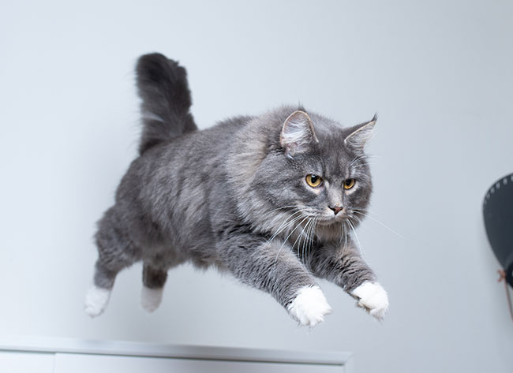
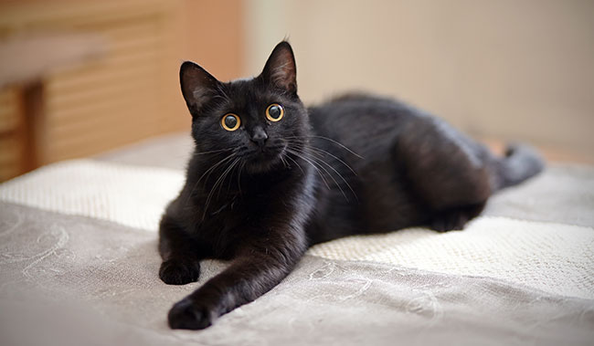

-
Gatos tem 7 vidas
Dá para acreditar nessa loucura? Pois é, existem algumas pessoas que juram que sim. Os gatos são animais extremamente resistentes, rápidos e contam com uma anatomia privilegiada, mas eles têm uma única vida como qualquer outra espécie no mundo. E por que será que são 7 vidas? Na verdade o número varia dependendo da região. Em alguns países de língua inglesa acreditam que os gatos têm 9 vidas, enquanto os turcos e os árabes acreditam que são 6. Em todos os casos, os números sãos místicos e têm diversos significados conforme a cultura e a religião do local. Provavelmente esse mito se popularizou devido aos bichanos suportarem quedas, entre outros acidentes, e mesmo assim quase sempre conseguirem cair em pé. Os gatinhos possuem um reflexo de redirecionamento, um bom equilíbrio e flexibilidade nos ossos, o que facilita que pousem em segurança.
Gatos transmitem asma

Muitas pessoas acreditam que o ronronado do gato significa que ele tenha asma, mas isso não é verdade. O ronrom, ronrono, ou ronronar, é o ruído contínuo produzido pelos felinos e que faz parte de sua comunicação e pode ter diversos significados, como: felicidade, fome, ou até algum tipo de problema que ele esteja passando. Os felinos até podem ter asma ou bronquite, mas é diferente da enfermidade humana. A asma é uma doença alérgica e portanto não é transmitida por nenhum ser vivo, seja vírus, bactéria ou gato. O que pode acontecer é os pelos dos gatinhos, ou qualquer outro fator externo – como poeira, perfume, fumaça, entre outros – causar irritações ou acentuar sintomas de quem convive com essa condição.
Gato preto traz azar
Esse mito surgiu na idade média uma vez que ter uma “bruxa disfarçada” dentro de casa era sinônimo de má sorte e energias negativas. Até hoje esse preconceito com gatos pretos existe e, infelizmente, é comum ver notícias de maus tratos relacionados com esse tema. Em alguns países como no Japão e no Reino Unido, por exemplo, cruzar com um gato preto significa sorte.
Gatos odeiam água

Se você é um (a) gateiro (a) de carteirinha e adora conhecer mais sobre os bigodudos, com certeza já teve a curiosidade em saber porque a maioria dos gatos não gostam de tomar banho. Arranhões para lá, mordidas para cá… eles sempre deixam claro que não são chegados a uma ducha. Você já deve ter notado que os próprios bichanos preferem ‘‘dar banhos’’ com lambidas em si mesmos, o que não é prejudicial, mas também não faz uma higienização completa, e nem elimina os ácaros que ficam nos pelos. Há diversas teorias sobre o porquê dos felinos não gostarem muito de tomar banho. Uma delas é que os gatinhos tem uma essência selvagem e não gostam de se sentir encurralados, com o corpo pesado e sua mobilidade comprometida (mesmo que seja por um curto período de tempo). Além disso, os gatos têm um olfato super desenvolvido, então ele é capaz de rejeitar a água processada com produtos químicos, e ao mesmo tempo gostar de se refrescar em fontes naturais de água.